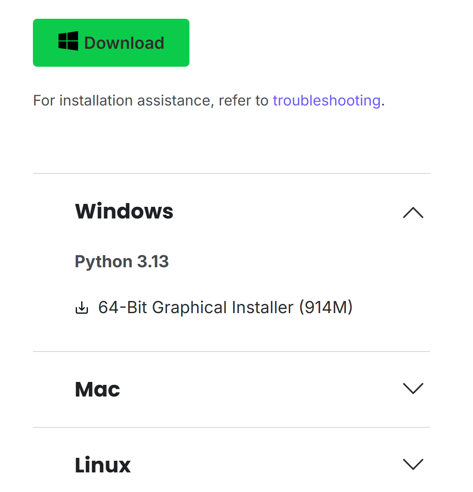
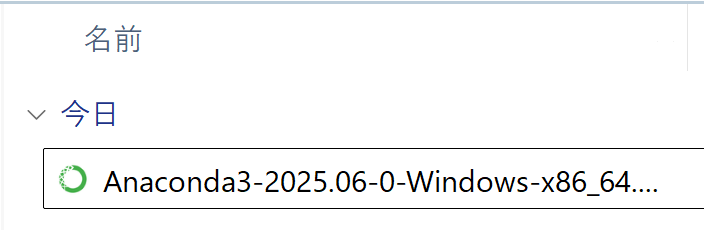
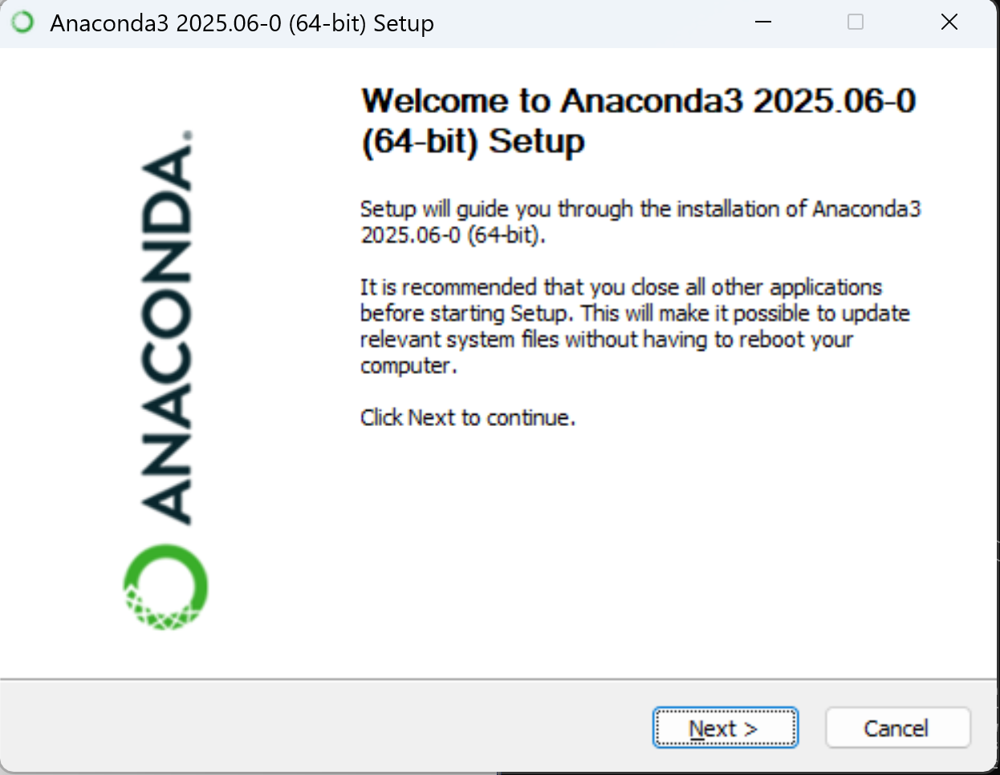
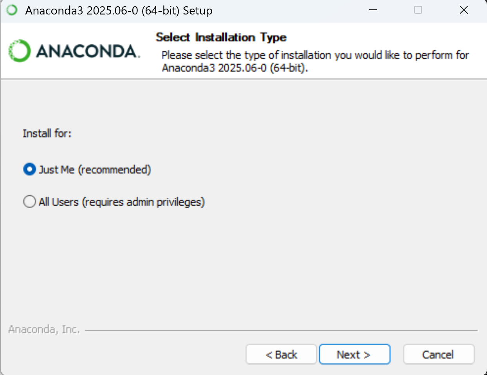
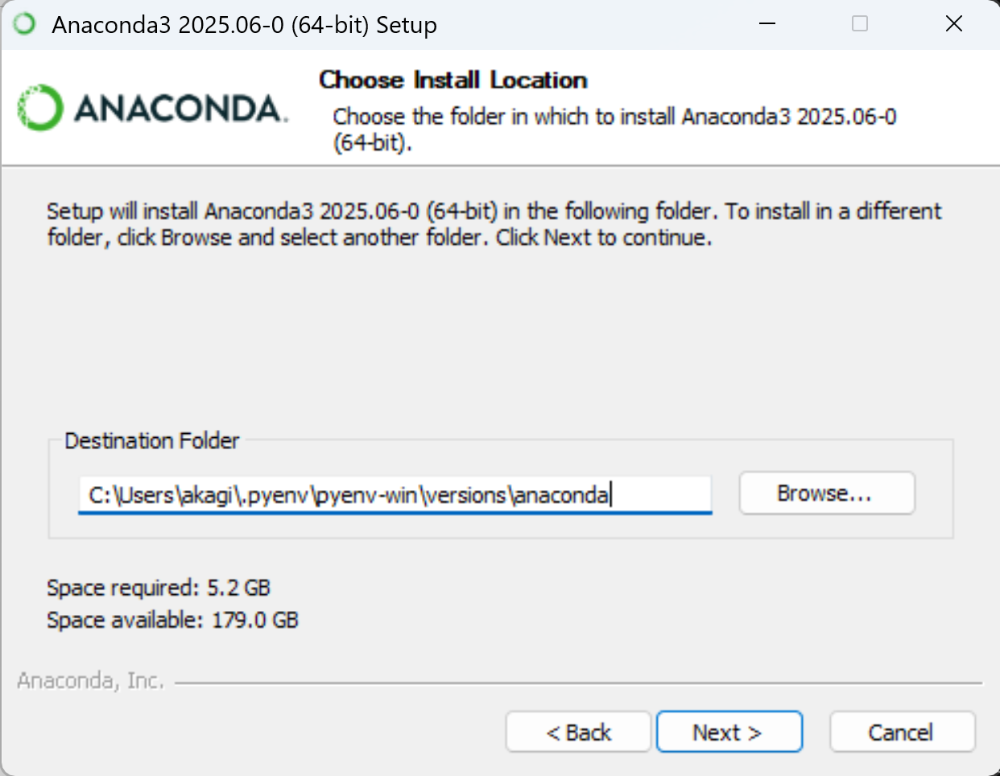
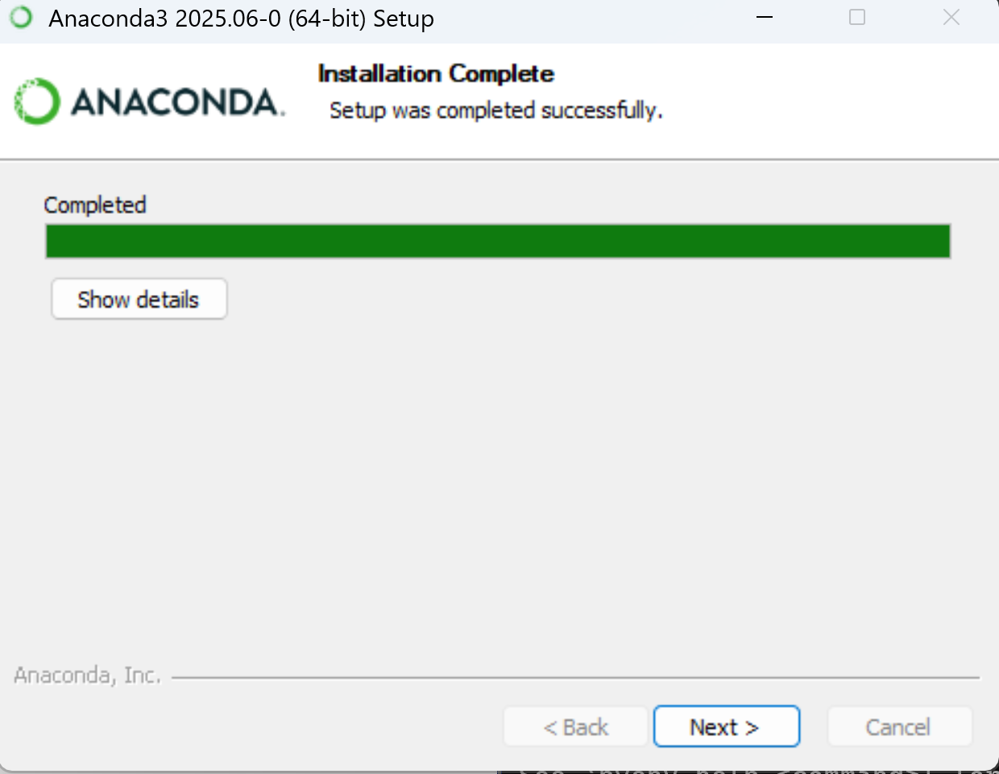
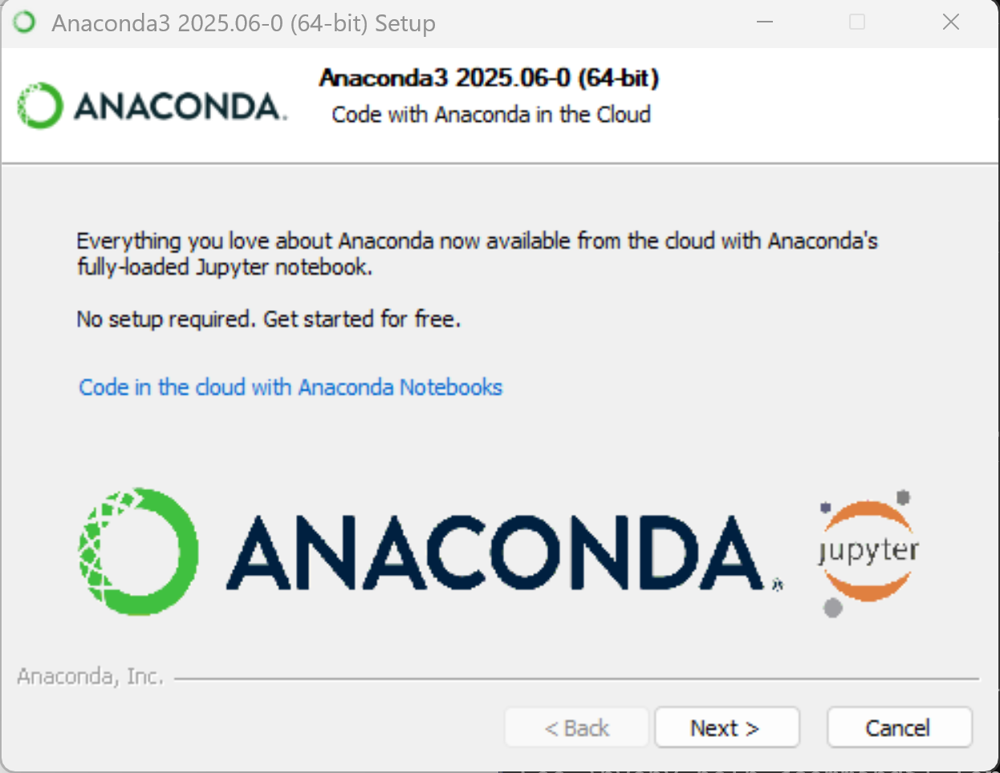
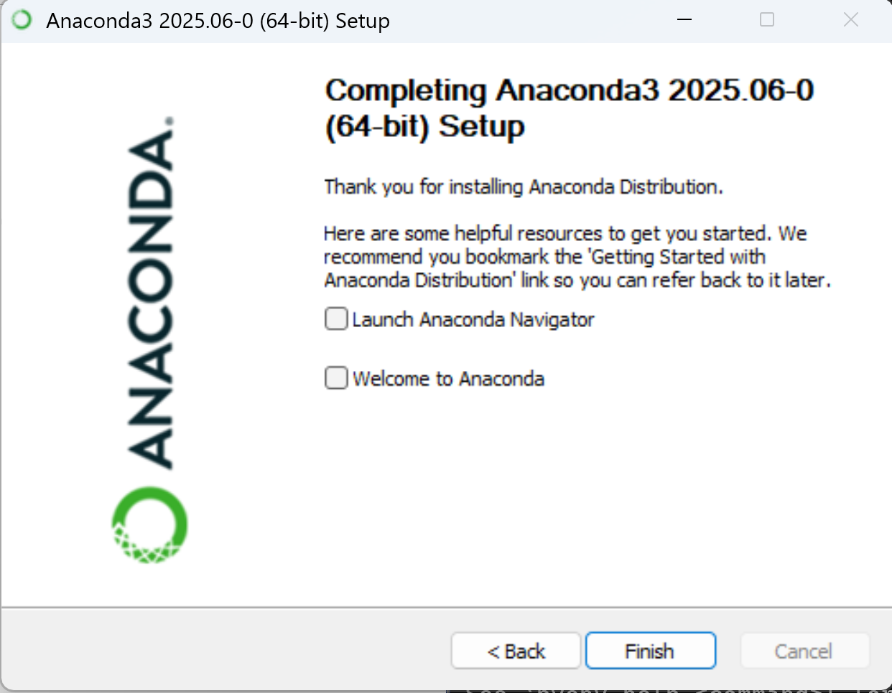
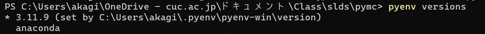

pyenv+anacondaによるPyMC環境構築(旧版・備忘録)
授業資料をuv/Colabに移行するにあたり,旧版のpyenv+anacondaによるPyMC環境構築手順をアンインストール用の備忘録として記録したものです.
pyenv+anacondaによるPyMC環境構築(旧版)
本記事は,授業資料(統計学特殊講義DS等)で使用していた pyenv + anaconda によるPyMC環境構築の手順を記録したものです.
授業では pyenv+anaconda から uv / Google Colab への移行を進めており,この手順は今後の授業では使用しません. 過去にこの手順で環境構築を行った学生が,conda環境をアンインストールする際の備忘録として残しています.
新しい環境構築手順については,最新の授業資料を参照してください.
conda環境のアンインストール
過去にこの手順でPyMC環境を構築した場合,以下の手順でconda環境を削除できます.
まず,conda環境を無効化します.
conda deactivate続いて,作成した仮想環境を削除します.
conda remove --name pymc_env --allその後,pyenv自体のアンインストールについては pyenvによるPython環境構築(旧版・備忘録) の手順に従ってください.
以下は旧版の環境構築手順です.
環境構築
それでは,実際にプログラム上でこのモデルを構築,推定してみましょう.
Pythonにおいてベイズ統計学に基づいた統計モデリングを実施するためのライブラリとしてPyMC5があります(古いVersionとしてPyMC3があり全く異なる記法などを用いているので注意して下さい). こちらのライブラリは,Pythonのパッケージマネージャーであるanacondaを利用します.
通常これまでに利用してきたpipによる環境とanaconda環境の併用は困難です. ただし,この講義では,pyenvを環境構築に利用していますので, PyMCを利用するためのディレクトリのlocal環境にのみanaconda用の環境を構築することが可能です.
まずは,ターミナルでPyMCを実行する用のディレクトリを作成し,そこに移動して下さい.
以下, 移動したディレクトリ内にanaconda環境を構築していきます.
anacondaのインストール
MacOSの方は pyenv install -l でanaconda系統の環境が表示されるので pyenv install anacondaXXX でインストール可能です.
執筆時点の最新版 anaconda3-2024.10-1はPyMC5が対応していないため,anaconda3-2024.02-1が推奨されます.
Windowsの場合は pyenv でのインストールが提供されていないので,手動でインストールする必要があります.
anacondaの公式ページに行き,Get Startedから指示に従ってアカウント等を作成して下さい.
続いて, Windows版のanacondaのインストーラーをダウンロードします.

ダウンロードが完了したら,インストーラーをダブルクリックして起動します.
設定は変更せずNextをクリックしていきます.



インストール先の設定画面が出たら, pyenvのversionsフォルダに保存します.
パスを以下のように指定して次に進みましょう
C:\Users\xxx\.pyenv\pyenv-win\versions\anaconda
(XXXの部分を自分のユーザー名にしましょう.)

その後は基本的にデフォルトの設定のまま,Next,Finishを押しましょう.



インストールが完了したら,ターミナルを開き作業用フォルダに移動して,pyenv versions コマンドでanacondaがインストールされているか確認しましょう.

ローカル環境にanacondaを指定します.
pyenv local anaconda
pyenv rehashanacondaではpipではなくcondaを利用してライブラリをインストールします. まずは,anaconda自体をupdateしましょう.
conda update -n base -c defaults condaProceed ([y]/n)? yが表示されたら, y を押してEnterします.
続いてPyMC5の公式サイトに従い,anaconda上でPyMC5をインストールします.
pyenvが既に仮想環境ですが,conda createコマンドによって pymcなどがインストールされたpythonの仮想環境を更に構築します.
conda create -c conda-forge -n pymc_env "pymc>=5"入力後完了したら,仮想環境を有効化するためにterminalを一度初期化します.
conda init powershellMacOSの場合は, conda init zsh コマンドです.
を入力し, Terminalを閉じて再度作業ディレクトリに移動したあとに仮想環境を有効化する以下のコマンドを入力して下さい.
conda activate pymc_envMacの場合は, このあと仮想環境をlocalに指定します.
pyenv versions
system
3.12.3
* anaconda3-2024.02-1
anaconda3-2024.02-1/envs/pymc_env
❯ pyenv local anaconda3-2024.02-1/envs/pymc_env
❯ pyenv local
anaconda3-2024.02-1/envs/pymc_env環境の確認をします.
Get-Command pythonMacOSの場合は, witch python コマンドです.
以下のようにpymc_env内のpythonが表示されれば利用可能な状況になっています.
CommandType Name Version Source
----------- ---- ------- ------
Application python.exe 3.11.14... C:\Users\akagi\.pyenv\pyenv-win\versions\anaconda\envs\pymc_env\python.exe必要なライブラリをインストールします.
conda install seaborn scikit-learn statsmodels途中で,Proceed ([y]/n)? と表示されたらyと入力してENTERを押します.
Preparing transaction: done
Verifying transaction: done
Executing transaction: doneなどが表示されれば,環境構築完了です.
以降,Terminalで作業ディレクトリに移動した後conda activate pymc_env でこの環境が利用できるようになります.